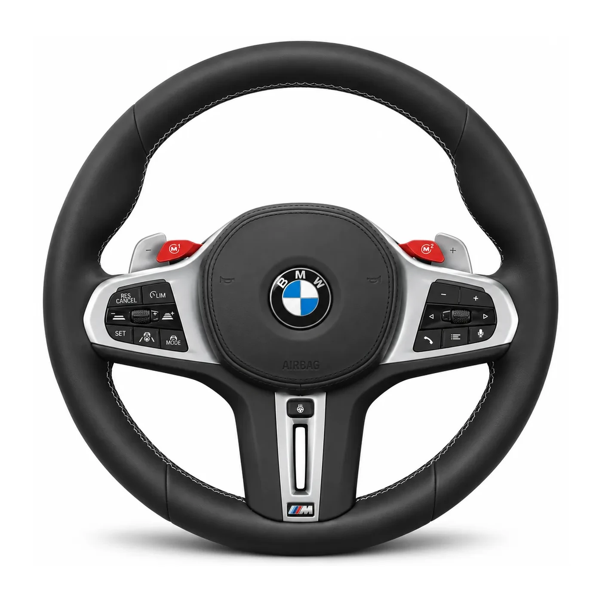
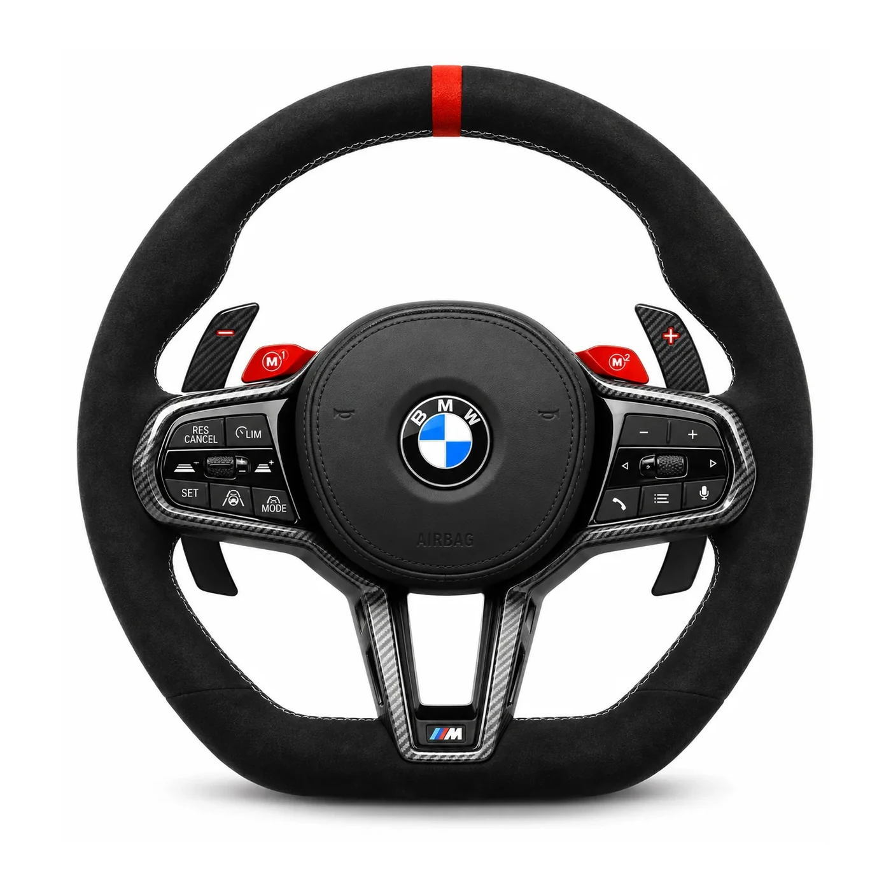

El volante
¿Qué es el volante?
Es lo primero que ves al subirte y lo último que sueltas al bajarte. Cambia el volante y cambia toda la cabina: el tacto, la vista, la sensación al manejar.
- Piel. Suave, de todos los días, con el agarre de siempre.
- Alcántara. El tacto de los M más bravos, firme en las manos.
- Carbono. Ligero a la vista, el detalle que se nota sin gritar.
Cinco volantes, todos originales de BMW. Tú eliges el que va con tu auto y con tu forma de manejar.
Collection · Cinco volantes
 M Sport
El de todos los días, con carácter M.
Precio de referencia: $13,500 MXN
M Sport
El de todos los días, con carácter M.
Precio de referencia: $13,500 MXN
 M Performance · Alcántara
Alcántara y franja roja. El tacto M.
Precio de referencia: $21,500 MXN
M Performance · Alcántara
Alcántara y franja roja. El tacto M.
Precio de referencia: $21,500 MXN
 M CS · Alcántara y carbono
El tope. Alcántara, carbono, M1 y M2.
Precio de referencia: $31,500 MXN
M CS · Alcántara y carbono
El tope. Alcántara, carbono, M1 y M2.
Precio de referencia: $31,500 MXN
Cinco formas de sentir tu BMW.
Todos OEM, originales de agencia. Toca uno para verlo de cerca.
M Sport
El de todos los días, con carácter M.
Precio de referencia: $13,500 MXN
M Performance · Alcántara
Alcántara y franja roja. El tacto M.
Precio de referencia: $21,500 MXN

M Competition · Piel El del M3 y M4. Piel, M1 y M2. Precio de referencia: $23,500 MXN
M LCI · Base plana El nuevo, de base plana. Alcántara, M1 y M2. Precio de referencia: $25,500 MXN
M CS · Alcántara y carbono
El tope. Alcántara, carbono, M1 y M2.
Precio de referencia: $31,500 MXN
Los precios son de referencia y están por confirmar.
Serie F · Serie G
¿Le queda a mi BMW?
Si tienes un Serie F, estos volantes de generación G se le pueden montar. Si tienes un Serie G, es directo y rápido. Dinos tu modelo y te decimos cuáles le quedan.
ATELIER · A tu medida
¿Quieres algo más personal?
Cuéntanos qué tienes y qué imaginas, con tus palabras y sin prisa. Lo leemos con calma y lo revisamos contigo, en persona, en San Pedro.